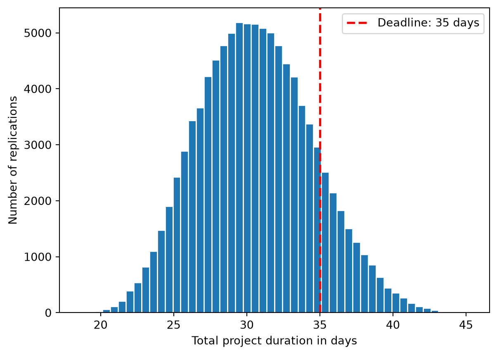
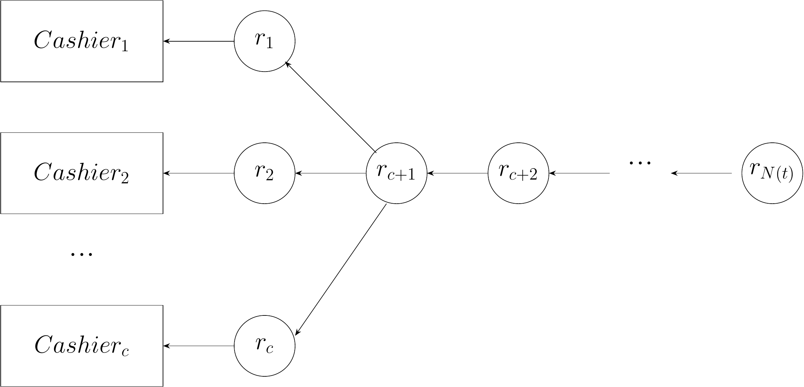
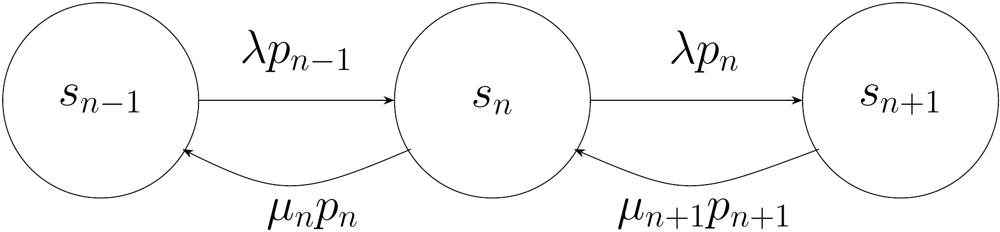
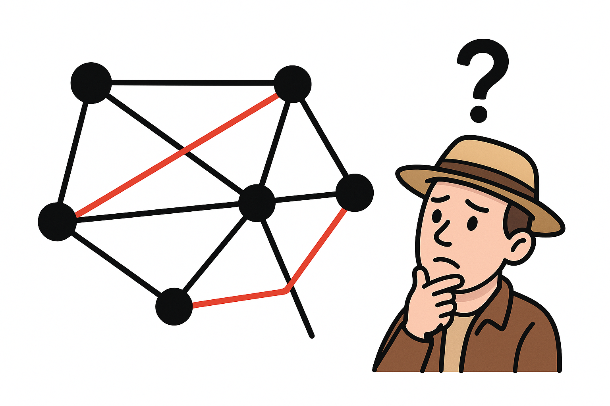

Simulation and optimization approaches are present in our everyday lives, albeit most of the time operating in a background plane. For example, when navigating with a GPS, the system simulates different routes and optimizes for the shortest or fastest path. Similarly, supply chains use optimization algorithms to minimize costs and maximize efficiency, while simulations help predict demand and manage inventory. These techniques are fundamental tools in decision-making processes across various industries, from transportation and logistics to finance and healthcare.
But what do simulation and optimization approaches have in common, apart from being complementary tools? The answer lies in the concept of a model. In the context of machine learning, we normally refer to a model as a mathematical or computational representation that captures the relationships between input data and output predictions. In simulation and optimization, a model similarly serves as an abstraction of a real-world system or process, allowing us to analyze, predict, and improve its behavior through experimentation and algorithmic techniques.
In the following, we will delve deeper into the concept of a model and how models are used in simulation and optimization contexts using some practical examples.
1.1 Example 1: Will the project finish on time?
Imagine that a small software team is preparing a new application for release. Before the application can be delivered, the team must complete three tasks:
implement the remaining features,
test the application, and
prepare the production release.
The tasks must be performed one after another. However, their durations are uncertain. Implementation may take longer if unexpected technical problems occur. Testing may reveal defects that require additional work. Even the final deployment may encounter delays.
The project manager has promised that the application will be ready within 35 working days. The central question is therefore:
What is the probability that the project will be completed within 35 working days?
Because the exact task durations are unknown, adding three fixed numbers is not sufficient. Instead, we describe each duration using a probability distribution and simulate many possible realizations of the project.
This is a typical application of Monte Carlo simulation.
1.1.1 Identifying the elements of the model
As in other simulation models, we first identify the most important elements of the system. For a Monte Carlo simulation, we distinguish between components, random inputs, model logic, outputs, and metrics.
Components: The entities represented in the model. In this example, the components are the three project tasks: implementation, testing, and deployment.
Random inputs: Quantities whose values are uncertain. Here, the durations of the three tasks are random variables.
Model logic: The mathematical or computational relationships that transform the inputs into outputs. Since the tasks are performed sequentially, the total project duration is the sum of the three task durations.
Outputs: Quantities calculated for one simulated scenario. The primary output is the total duration of the project.
Metrics: Summary measures calculated across many simulated scenarios. Examples include the expected project duration, the probability of meeting the deadline, and percentiles of the completion-time distribution.
A single simulation run represents one possible way in which the project could unfold. Repeating the simulation many times allows us to estimate how likely different outcomes are.
1.1.2 Modeling uncertain task durations
Suppose the project team provides the following estimates:
Task
Optimistic duration
Most likely duration
Pessimistic duration
Implementation
10 days
15 days
24 days
Testing
5 days
8 days
16 days
Deployment
2 days
4 days
8 days
For each task, the team can provide a minimum plausible duration, a most likely duration, and a maximum plausible duration. A simple probability distribution that uses exactly these three estimates is the triangular distribution.
For the moment, we assume that the three task durations are statistically independent. This means, for example, that an unusually long implementation phase does not change the probability distribution of the testing duration. This simplifying assumption can be relaxed in more advanced models.
1.1.3 Simulating one possible project
One Monte Carlo replication consists of the following steps:
Sample an implementation duration \(d_I\).
Sample a testing duration \(d_T\).
Sample a deployment duration \(d_D\).
Calculate the total duration
\[
d = d_I+d_T+d_D.
\]
Record whether the total duration is at most 35 days.
The following Python code implements one replication:
Implementation: 16.0 days
Testing: 10.2 days
Deployment: 4.9 days
Total duration: 31.1 days
On time: True
The sampled values will generally be different each time the code is executed. This is not an error. Random variation is an essential part of the model.
However, one simulated project tells us very little about the overall risk. To estimate the probability of meeting the deadline, we must repeat the experiment many times.
1.1.4 Repeating the experiment
Let \(R\) denote the number of Monte Carlo replications. For replication \(r\), let \(D^{(r)}\) be the simulated total project duration.
Replications: 100,000
Mean project duration: 30.64 days
Probability of finishing
within 35 days: 86.14%
The list durations contains the output of every replication. The expression
duration <= deadline
returns either True or False. In Python, these values behave like 1 and 0 when they are added. Dividing the number of successful replications by the total number of replications therefore gives the estimated probability of meeting the deadline.
The call to random.seed(2026) initializes the random-number generator. Using a fixed seed makes the results reproducible: running the same code again produces the same sequence of pseudo-random values.
1.1.5 Examining the distribution of completion times
The probability of meeting a particular deadline is useful, but it does not provide a complete picture. We may also want to understand the distribution of possible project durations.
import matplotlib.pyplot as pltplt.hist( durations, bins=50, edgecolor="white")plt.axvline( deadline, color="red", linestyle="--", linewidth=2, label=f"Deadline: {deadline} days")plt.xlabel("Total project duration in days")plt.ylabel("Number of replications")plt.legend()plt.show()

Distribution of simulated project completion times.
The histogram approximates the probability distribution of the total project duration. Simulated durations to the left of the red line correspond to projects that finish on time. Durations to the right correspond to projects that miss the deadline.
We can also calculate percentiles. For example, the 90th percentile is a duration that is exceeded in only approximately 10% of the simulated projects.
import numpy as nppercentiles = np.percentile(durations, [50, 80, 90, 95])for level, value inzip([50, 80, 90, 95], percentiles):print(f"{level}th percentile: {value:.2f} days")
50th percentile: 30.50 days
80th percentile: 33.98 days
90th percentile: 35.83 days
95th percentile: 37.37 days
If the 90th percentile is 39 days, for example, a deadline of approximately 39 days would be met in about 90% of the scenarios represented by the model.
This gives the project manager two related ways to formulate a question:
Deadline evaluation: If the deadline is fixed at 35 days, what is the probability of meeting it?
Deadline selection: If the desired confidence level is 90%, what deadline should be promised?
1.1.6 Monte Carlo estimates are themselves uncertain
The result of a Monte Carlo simulation is an estimate. If we run only a small number of replications, the estimated probability can vary substantially.
Assuming that the replications are independent, the estimated standard error of \(\widehat{p}_R\) is
Increasing the number of replications reduces the Monte Carlo standard error. More precisely, the standard error decreases proportionally to \(\frac{1}{\sqrt{R}}.\)
Consequently, reducing the simulation error by a factor of two generally requires approximately four times as many replications.
In general, there are three sources of uncertainty in a Monte Carlo simulation:
Input uncertainty describes uncertainty about the actual task durations.
Monte Carlo error arises because we estimate the result using a finite number of replications.
Model uncertainty concerns whether our assumptions, such as the choice of triangular distributions or independence between tasks, adequately represent the real project.
Running more replications reduces Monte Carlo error, but it does not correct unrealistic assumptions or inaccurate input estimates.
1.1.7 The Monte Carlo simulation algorithm
The complete procedure can be summarized as follows:
Input:
Number of replications R
Project deadline d_max
Probability distributions for all task durations
Set successful_projects = 0
For r = 1, ..., R:
Sample the duration of each task
Calculate the total project duration
If total duration <= d_max:
successful_projects = successful_projects + 1
Estimate:
probability = successful_projects / R
This example illustrates the defining idea of Monte Carlo simulation:
Repeatedly sample uncertain inputs, evaluate the model for each sampled scenario, and summarize the resulting outputs.
1.1.8 Possible refinements of the model
Our model is deliberately simple. A more realistic project simulation could include:
tasks that are performed in parallel;
precedence constraints between tasks;
dependencies between task durations;
the possibility that failed tests require rework;
uncertain staff availability;
interruptions caused by urgent maintenance tasks;
different team sizes or resource-allocation decisions;
financial penalties for missing the deadline.
For example, suppose implementation and documentation can proceed in parallel, while testing starts only after both have been completed. If \(D_I\) denotes implementation time and \(D_A\) documentation time, the duration before testing can begin is
\[
\max(D_I,D_A)
\]
rather than
\[
D_I+D_A.
\]
The total duration would then be modeled as
\[
D=\max(D_I,D_A)+D_T+D_D.
\]
Although such extensions make the model more realistic, the basic Monte Carlo procedure remains unchanged: specify the uncertain inputs, generate scenarios, evaluate each scenario, and aggregate the results.
Later chapters will examine how probability distributions are selected, how random values are generated, how simulation output is analyzed, and how Monte Carlo simulation can be combined with optimization methods.
1.2 Example 2: Simulating supermarket dynamics
Imagine you are in your favourite grocery store waiting at the checkout queue. For simplicity, let’s assume there is only one open counter. When you arrive at the queue, there might be other customers already waiting, while the first customer at the queue is currently being served. Shortly after you, a new customer arrives, taking the next free spot right behind you. And then another customer arrives, and another one, and another one…
Let’s try to break down how this system behaves and what are the most important interactions between the parts of the system. In general, we will distinguish between components, states, events, inputs and metrics.
Components: These are the entities that interact with each other. In our example, we have customers, cashiers and the queue itself.
States: The configurations of the system that represent valid combinations of specific properties of the components at a given moment of time. For instance, at each time the queue has a specific length: zero if it’s empty, one customer, two customers, etc. Additionally, the cashier can be busy or idle. We can also count the number of customers currently present in the supermarket which have not yet arrive at the checkout queue.
Events: The interactions themselves, like a new customer arriving at the queue, checkout start or checkout completion.
Inputs: Whatever information is fed into the system, e.g. arrival times, service times, etc. These inputs can contain statistical assumptions, like the distribution of arrival times.
Metrics: How we evaluate the system as a whole in a given time step. For instance, what is the average waiting time? How much time are the cashiers busy? How is the queue length distributed?
The system could be represented by the following Python code as a minimal variant.
This code assumes that customers arrive at regular subsequent intervals after each arrival event. The parameter sim_end defines how long (how many steps) we want to simulate in this case. The function service_time returns the time the cashier needs for checking out customer cid. The next customer will arrive after a time given by the function next_interarrival, which can implement different stochastic behaviours.
We can represent this system graphically as shown in the following illustration:

Figure 1.1: An illustration of the supermarket dynamics.
In this figure, customers are denoted by \(r_i\), the amount of cashiers is \(c\) and the total number of customers in the supermarket at time \(t\) is denoted by \(N(t)\).
Now let’s try to refine the dynamics of this system. We will now write some equations to describe the system’ dynamics according to the infinite waiting room\(M/M/c\) model. Let’s make the following assumptions:
Arrivals follow a Poisson distribution with mean \(\lambda\) (arrivals per second), which for this case will be assumed to be stationary.
The service times are assumed to be exponentially distributed with mean \(1/\mu\).
What would be now the traffic intensity per cashier? That is, what is the mean customer flow that each cashier experiences from their own point of view? Let’s call this number \(\rho\) and calculate it as follows:
\[
\rho=\frac{\lambda}{c\mu}
\tag{1.1}\]
In words, if customers arrive at a rate of \(\lambda=10\) customers/s and each cashier serves 2 customers/s (yes, it’s a fast supermarket). With 5 cashiers, that means that \(\rho=10/5\times 2=1\). This means that each cashier has quite a lot to do right now.
We are now interested in the probabilities of the states in this systems. In this case, we define a system by the number of customers currently present in the supermarket. So we can have \(N=1\) if there is currently 1 customer present, or any other number of customers (we assume the supermarket is so large, we can accomodate any number of them). Let’s denote these probabilities by \(p_n=\operatorname{Pr}\{N=n\}\). We have:
Intuitively, \(p_n\) represents the fraction of time where the supermarket has exactly \(n\) customers. As mentioned earlier, we will assume that arrivals do not depend of the current state \(n\), so we write \(\lambda_n=\lambda\) for all \(n\ge 0\). However, note that the completion rates \(\mu_n\) do indeed depend of the current state. To see this, imagine that there is only one customer in the supermarket (\(n=1\)). The completion rate is then \(\mu_1=\mu\) since the only one cashier is needed to perform checkout. However, if there are \(n=2\) customers in the supermarket, two cashiers can serve those two customers in parallel, increasing the completion rate to \(\mu_2 = 2\mu\). The same reasoning applies until \(n=c\), the total number of cashiers. In this case, \(\mu_c=c\mu\) and the next customer will have to wait in the queue. So we have:
\[
\begin{aligned}
\lambda_n & =\lambda \text{ for all } n\ge 0 \\
\mu_n & =\min(n,c)\mu
\end{aligned}
\tag{1.3}\]
Now we are going to state our main modeling assumption. Consider how we transition between states. Specifically, we transition from state \(n\) to state \(n+1\) when a new customer enters the supermarket, and there were already \(n\) customers in it. Similarly, we transition from state \(n\) to state \(n-1\) when a customer leaves the supermarket (in this case, all customers are served by the cashiers, so there is no way you leave the supermarket without paying first). Remember that the rate of customers arriving at the supermarket is always \(\lambda\), and the rate of customers being served (i.e. leaving) when at state \(n\) is \(\mu_n\). In general, for each state we can define an incoming and an outgoing flow. This quantifies the transitions in resp. out of a given state.

Figure 1.2: Transition dynamics between neighboring states
As can be seen in the previous figure, transitions flow away from state \(n\) in two ways: first, to state \(n-1\) when a customer is served with a rate \(\mu_n p_n\) and to state \(n+1\) when a new customer arrives with a rate \(\lambda p_n\). Similarly, one can transition from the other states to state \(n\) either by having a customer served in state \(n+1\) with a rate \(\mu_{n+1}p_{n+1}\) or when being in state \(n-1\) and a new customer arrives with a rate \(\lambda p_{n-1}\). Our modeling assumption now is that, for each state \(n\), the flow outwards balances out with the flow inwards (global balance):
We can also write that, in the long term, the rate of transitions from \(n\) to \(n+1\) equals the transitions from \(n+1\) to \(n\), which results in the more simple form (local balance)
\[
\lambda p_n = \mu_{n+1}p_{n+1} \text{, for }n\ge 1
\tag{1.5}\]
This form follows from the global balance condition when only neighboring states are connected. Now, using this short form, we can provide closed-form expressions for different probabilities, using the following recursion (which directly follows from the above)
This is also called the Erlang-C probability and we will delve deeper into the details in the coming chapters.
We can now write computer code that performs a step-by-step simulation of the system (i.e. in discrete time steps). This is specially useful if we are in a situation where there is no closed-form analytical solution, or the analytical solution is too complex to calculate. For instance, we can run the above simulator for a large number of steps (say \(T=10^6\)) and then calculate specific metrics like:
Mean queue length.
Mean waiting time.
Mean time in the system.
Total fraction of time that the cashiers were busy.
Overall utilization.
We will see examples of such simulators in the first part of the book.
1.3 Example 3: The traveling salesman
Let’s now turn our attention to the other type of problems which are central to this book: optimization problems. Imagine you are a sales representative for a vaccum cleaner manufacturer. Your task is to visit potential customers in cities across your area and, at the end of the day, return to where you started your journey. As an environmental conscious employer and in order to save transport costs, your company introduces the restriction that each customer in the route has to be visited exactly once. So you need to think carefully before getting into your car and starting your route.

Figure 1.3: The traveling salesman has to find a good and practical solution
Now, the traveling salesman needs to consider two things:
A method for constructing valid tours that start and end in the same location.
A method for evaluating those tours so that we can quantitatively decide if a tour is better than another one.
Let’s address each of these considerations in detail. Assume that \(N=\{1,2,\dots,n\}\) is our set of possible locations. Let’s define the following variables:
\[
\begin{aligned}
x_{ij}=
\begin{cases}
1 & \text{if the tour goes directly to location }i \text{ to location }j \\
0 & \text{otherwise}
\end{cases}
\end{aligned}
\tag{1.8}\]
where \(i,j\in N\). We call \(x_{ij}\) our decision variables. So if the traveling salesman specifies the value of each \(x_{ij}\), we have a candidate route to consider. However, not every assignment of the \(x_{ij}\) variables to \(\{0,1\}\) will make sense for the traveling salesman. For instance, imagine that we have in one assignment both \(x_{23}=1\) and \(x_{43}=1\). That would mean that location 3 is visited twice, once from location 2 and another time from location 4. That violates the requirement that each location is visited exactly once.
To model this situation, we need to introduce constraints. In optimization problems, constraints take usually the form of equalities or inequalities as functions of the decision variables. In our case, the requirement that each location is visited only once can be expressed by the following (linear) equalities:
\[
\begin{aligned}
\sum_{j=1}^n x_{ij} & = 1\text{ for all }i\in N \\
\sum_{i=1}^n x_{ij} & = 1\text{ for all }j\in N
\end{aligned}
\tag{1.9}\]
The first equality means that, fixed a location \(i\), the sum of all outgoing edges is exactly one. Conversely, the second states that for a fixed location \(j\), the sum of all incoming edges is also exactly one. This ensures that each location is visited exactly once.
We need another technical condition to guarantee that the tour is a single one and not composed of multiple sub-tours. There should be no subset \(S \subset N\) such that is self contained, the number of visited cities equals exactly its size. Mathematically:
\[
\sum_{i\in N}\sum_{j\in N} x_{ij} \le |S|-1\text{ for all subsets }S\subset N
\tag{1.10}\]
To sum up, we now have modeled how valid tours should look like. If we find a tour \(T=\{x_{ij}\}\) that satisfies the constraints outlined before, we can be sure it is a valid tour.
But surely there are some tours that are better than others? This is where the second issue becomes important: we need an evaluation method to distinguish between good and bad solutions. In the optimization literature, we normally talk about objective functions. In our case, the traveling salesman would like the total distance to be minimized, meaning the sum of all distances between locations of the tour. Assume that \(c_{ij}>0\) is the distance between location \(i\) and \(j\) (for consistency assume \(c_{ii}=0\)). Now we want to minimize the total distance traveled. For this we write:
That is, if the traveling salesman visits location \(j\) from \(i\), then \(x_{ij}=1\) and this activates the travel cost \(c_{ij}\) in the sum. Otherwise, \(x_{ij}=0\) and the cost does not count to the total sum, since that path is not traversed in the tour. Putting it all together, we have:
\[
\begin{aligned}
T^* & =\operatorname{argmin} \sum_{i\in N}\sum_{j\in N} c_{ij}x_{ij} \\
\text{s.t. } & \sum_{j=1}^n x_{ij} = 1\text{ for all }i\in N \\
& \sum_{i=1}^n x_{ij} = 1\text{ for all }j\in N \\
& \sum_{i\in N}\sum_{j\in N} x_{ij} \le |S|-1\text{ for all subsets }S\subset N \\
& x_{ij} \in \{0,1\}
\end{aligned}
\tag{1.12}\]
We call this set of expressions our optimization model. This will be the mathematical underpinning for all the methods and algorithms that we will use to find a solution to this problem. In the first line, we state our goal: to obtain a tour \(T^*\) that is optimal in the sense of minimizing the total cost (the expression \(\operatorname{argmin}\) means “the argument that minimizes”, so find the \(x_{ij}\) that minimize the total cost function). The subsequent lines state the constraints that we listed before. In the last line we specify the domain of the decision variables, i.e. what are the possible values these variables can take.
We will see that, depending on the form of the optimization model we will be able to choose from a toolbox of algorithms capable to solve the problem at hand, either exactly (exact methods) or approximately (heuristic methods).
1.4 Structure of the book
In this first chapter, we have introduced the concept of a model and have applied it successfully to a simulation and an optimization problem. The rest of the book is structured in two parts: Part I will be dedicated to simulation approaches, including the \(M/M/c\) model we have seen in this chapter in Chapter 2. Monte Carlo methods are the main topic of Chapter 3. After that, Chapter 4 focuses on the handling of discrete events and queuing theory.
Part II is dedicated to optimization problems. In Chapter 5 we introduce the mathematical basics of optimization. Chapter 6 is dedicated to exact optimization methods like the simplex method for linear programming. Approximate methods for complex optimization problems like metaheuristics and evolutionary algorithms are presented in Chapter 7. Finally, we review the importance of optimization methods for machine learning in Chapter 8.
1.5 Exercises
In the Monte Carlo example, how can the smallest deadline \(d\) that is met with a probability of at least 90% be estimated from the simulated project durations? Implement the procedure and report the resulting deadline.
Prove that in the supermarket example the local balance condition follows from the global balance condition (Hint: use induction).
What happens to the optimization model in presented in Equations 1.12 if we remove Equation 1.10? Find an example of a tour that is valid according to the model but invalid for the traveling salesman.